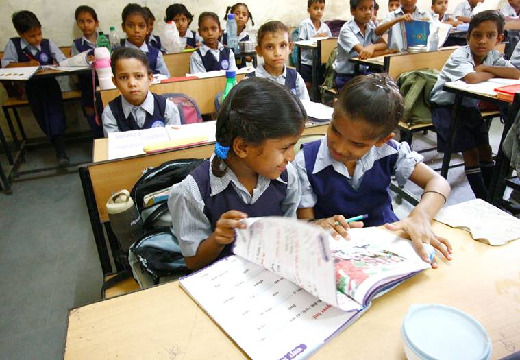
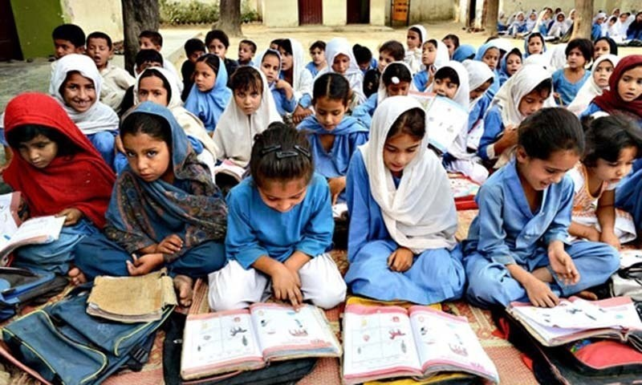
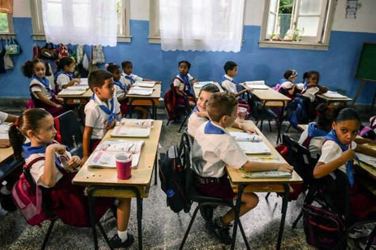

Child Rights and You




Vision
-
A happy, healthy and creative child whose rights are protected and honoured in a society that is built on respect for dignity, justice and equity for all.
Mission
-
To enable people to take responsibility for the situation of the deprived Indian child and so motivate them to seek resolution through individual and collective action thereby enabling children to realise their full potential
-
To make people discover their potential for action and change
-
To enable peoples’ collectives and movements encompassing diverse segments, to pledge their particular strengths, working in partnership to secure, protect and honour the rights of India’s children.